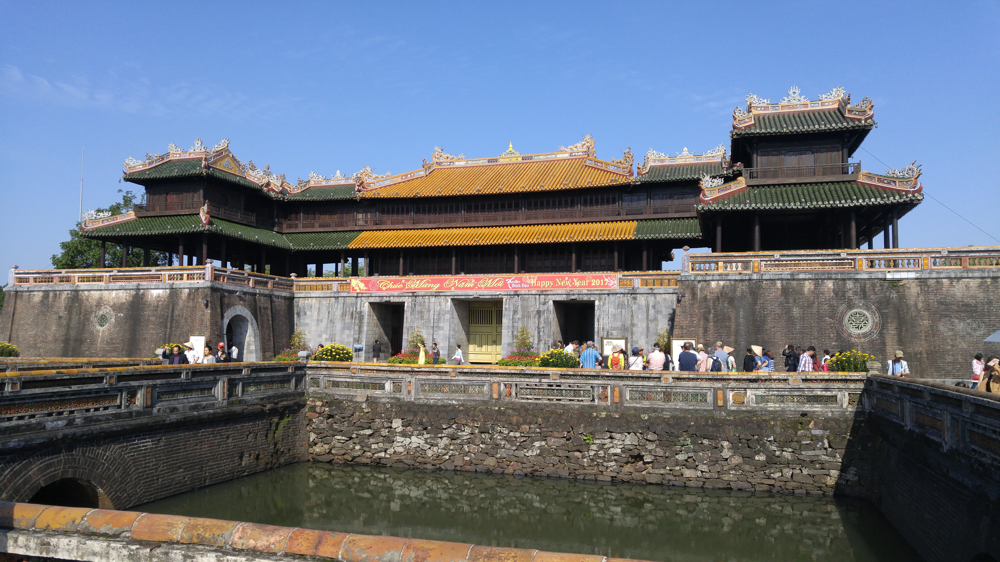

Go Back
Hue

Hue is a city in central Vietnam with a long and significant history. I spent 2 nights in Hue and did a full day tour of the city which included The Hue Imperial City (The Citadel), The Thien Miu Pagoda, Some of the tombs of former emperors and a boat ride down the Perfume river. If you are travelling throughout Vietnam you should at least spend a couple nights in Hue and visit the main sights as well as learn some of the history. Here is what I would recommend doing in one day in Hue. There are plenty of tour companies there that arrange tours to take you to these places.
The Imperial City is a walled enclosure within the citadel of the city of Hue, the former imperial capital of Vietnam during the Nguyen dynasty. Inside here is where the palaces of the imperial families were. It is a UNESCO world heritage site and is probably the main attraction in Hue. You can walk around and see the old walls, gates, courtyards, gardens and pavilions.
Thien Mu Pagoda is a very beautiful pagoda sitting alongside the Perfume river. The name translates to Heaven Fairy Lady Pagoda. The name of the pagoda comes from a legend. A long time ago, an old woman appeared on the hill where the pagoda stands today, telling local people that a Lord would come and build a Buddhist pagoda for the country's prosperity. They then decided to build this pagoda here. It's been a sight of historical importance and has had events such as protests against discrimination against buddhists in the 80's.
There are many tombs in and around Hue of former emperors and significant people in the country's history. Some of the most popular ones are The Tomb of Minh Mang, The Tomb of Tu Duc, and The Tomb of Khai Dinh. The tombs are located in large plots of land with well preserved gardens, courtyards, ponds as well as pagodas and traditional buidlings. I liked the terracotta warrior statues at the Khai Dinh tomb. I'd recommend visiting these three tombs and walking around taking in the fascinating views and learning some of the history.
Hue sits alongside The Perfume River. During my tour we went on a boat down the river which was a nice experience. You can get some great views of the city and enjoy the peaceful atmosphere. Also alongside the river in the actual town itself are many cafes and nice places where you can sit alongside the river and enjoy the view.